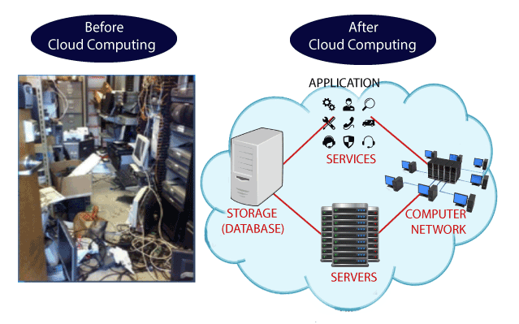

Cloud Computing Introduction
-> Cloud computing is the On-demend delivery of compute power, database, storage, applications and other IT resources through a cloud service platform via the internet with
pay-as-you-go pricing model.
-> Cloud computing is a virtualization-based technology that allows us to create, configure, and customize applications via an internet connection.
What is Cloud Computing?
-> The term cloud refers to a network or the internet.
-> It is a technology that uses remote servers on the internet to store, manage, and access data online rather than local drives.
-> The data can be anything such as files, images, documents, audio, video, and more.
-> There are some following operations that we can do using cloud computing:-
a. Developing new applications and services
b. Storage, back up, and recovery of data
c. Hosting blogs and websites
d. Delivery of software on demand
e. Analysis of data
f. Streaming videos and audios
Why Cloud Computing?
-> Small as well as large IT companies, used to follow the traditional methods to provide the IT infrastructure.
-> That means for any IT company, we need a Server Room that was the basic need of IT companies.
-> In that server room, there should be a database server, mail server, networking, firewalls, routers, modem, switches, QPS (Query Per Second means how much queries or load
will be handled by the server), configurable system, high net speed, and the maintenance engineers.
-> To establish such IT infrastructure, we need to spend lots of money. To overcome all these problems and to reduce the IT infrastructure cost, Cloud Computing comes into
existence.

Top players in cloud - AWS, Microsoft Azure, GCP, ALIbaba cloud, Oracle, VmWare, Fujitsu, IBM
Characteristics of Cloud Computing:-
The characteristics of cloud computing are given below:
1) Agility ->The cloud works in a distributed computing environment. It shares resources among users and works very fast.
2) High availability and reliability -> The availability of servers are high and more reliable because the chances of infrastructure failure are minimum.
3) High Scalability -> Cloud offers "on-demand" provisioning of resources on a large scale, without having engineers for peak loads.
4) Multi-Sharing -> With the help of cloud computing, multiple users and applications can work more efficiently with cost reductions by sharing common infrastructure.
5) Device and Location Independence -> Cloud computing enables the users to access systems using a web browser regardless of their location or what device they use
e.g. PC, mobile phone, etc. As infrastructure is off-site (typically provided by a third-party) and accessed via the Internet,
users can connect from anywhere.
6) Maintenance -> Maintenance of cloud computing applications is easier, since they do not need to be installed on each user's computer and can be accessed from different
places. So, it reduces the cost also.
7) Low Cost -> By using cloud computing, the cost will be reduced because to take the services of cloud computing, IT company need not to set its own infrastructure and
pay-as-per usage of resources.
8) Services in the pay-per-use mode -> Application Programming Interfaces (APIs) are provided to the users so that they can access services on the cloud by using these APIs
and pay the charges as per the usage of services.